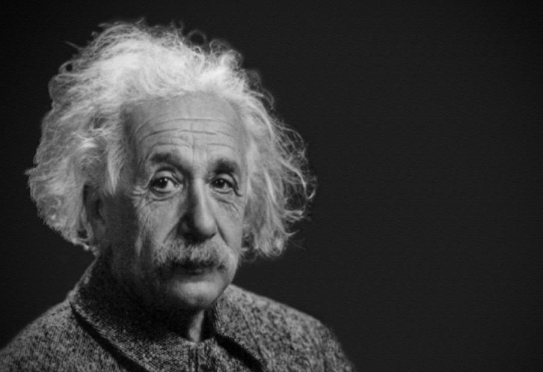
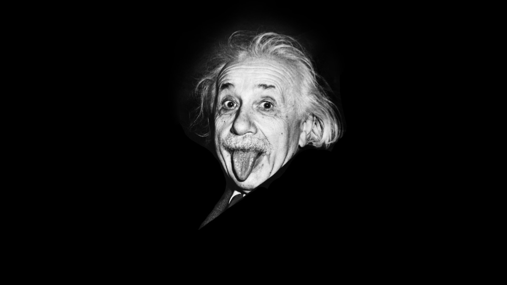

Albert Einstein


Einstein was the original hair model of his time.
Here is the timeline of Einstein's life:
Wikipdia link- 1879 - Born to Hermann Einstein (a featherbed salesman) and his wife Pauline in Ulm, Germany.
- 1884 - Receives his first compass around this time, inspiring a lifelong quest to investigate mysteries of the natural world.
- 1889 - Settles into a program of self-education at age 10 and begins reading as much about science as he can.
- 1894 - Stays on in Munich to finish the school year after his parents move to Pavia, Italy. Lasts only one term on his own and then follows his family to Italy.
- 1895 - Attempts to skip high school by taking an entrance exam to the Swiss Polytechnic, a top technical university, but fails the arts portion. His family sends him to the Swiss town of Aarau to finish high school.
- 1896 - Graduates from high school at age 17 and enrolls at the ETH (the Federal Polytechnic School) in Zurich.
- 1898 - Falls in love with Mileva Maric, a Serbian classmate at the ETH.
- 1900 - Graduates from the ETH.
- 1901 - Becomes a Swiss citizen and, unemployed, searches for work. Meets Maric in northern Italy for a tryst, and she becomes pregnant. In the fall, he finds work in Schaffhausen, Switzerland as a tutor. Maric, visibly pregnant, moves to Stein am Rhein, three miles upriver. She then returns to her parents' home to give birth to her child. Einstein moves to Bern.
- 1902 - In January, Maric gives birth to their daughter, Lieserl, whom they eventually put up for adoption. Lieserl reportedly becomes ill, and then all record of her disappears. Einstein takes a job at the Swiss Patent Office. Hermann Einstein becomes ill and dies.
- 1903 - Marries Maric in January.
- 1904 - Maric gives birth to their first son, Hans Albert.
- 1905 - Publishes, at age 26, five groundbreaking papers, making this his "annus mirabilis," or miracle year. One of the papers introduces his special theory of relativity and another E = mc2.
- 1906 - Continues working as an examiner at the Swiss Patent Office in Bern.
- 1907 - Begins applying the laws of gravity to his special theory of relativity.
- 1910 - Son Eduard is born.
- 1911 - Moves with his family to Prague, where he is given a full professorship at the German University there. Attends the invitation-only Solvay Conference in Brussels, the first world physics conference; he is the youngest physicist there.
- 1912 - Moves with his family to Zurich, where he becomes a professor of theoretical physics at the ETH.
- 1913 - Works on his new theory of gravity.
- 1914 - Becomes director of the Kaiser Wilhelm Institute in Berlin and professor of theoretical physics at the University of Berlin. Maric and the children move there in April, but they return to Zurich after three months. Divorce proceedings begin. In August, World War I begins.
- 1915 - Completes the general theory of relativity.
- 1917 - Collapses from exhaustion and falls seriously ill. Nursed back to health by his cousin Elsa Löwenthal. Publishes his first paper on cosmology.
- 1919 - Marries Löwenthal. On May 29, a solar eclipse provides proof of the general theory of relativity.
- 1922 - Awarded the Nobel Prize in Physics for 1921.
- 1927 - Attends fifth Solvay Conference and begins developing the foundation of quantum mechanics with Niels Bohr.
- 1928 - Begins pursuing his idea of a unified field theory.
- 1932 - As a Jew, begins to feel the heat of Nazi Germany. Now, at 53, at the height of his fame.
- 1933 - Sets sail with Löwenthal for the United States. Settles with her in Princeton, New Jersey, where he assumes a post at the Institute for Advanced Study.
- 1936 - Löwenthal dies after a brief illness.
- 1939 - Writes a famous letter to President Franklin Roosevelt not long after the start of World War II that warns of the possibility of Germany's building an atomic bomb and urges nuclear research.
- 1940 - Becomes an American citizen (retains his Swiss citizenship).
- 1949 - Ex-wife Maric dies.
- 1955 - Dies of heart failure on April 18.